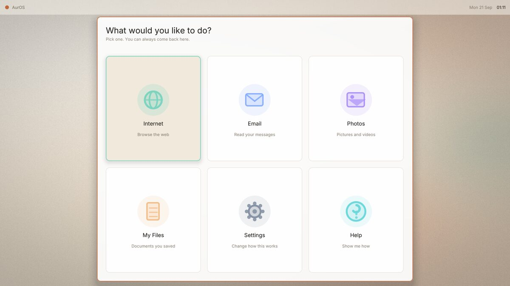
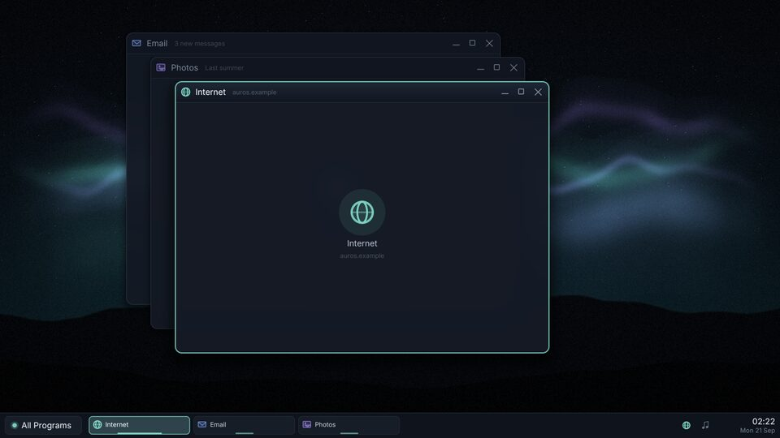
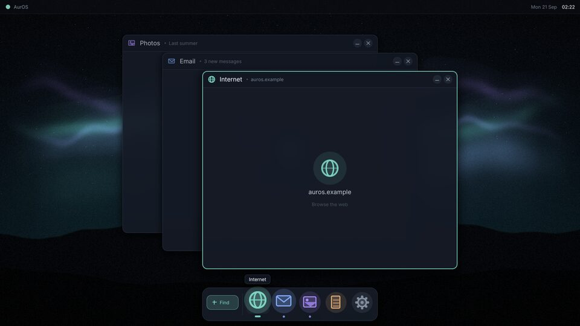
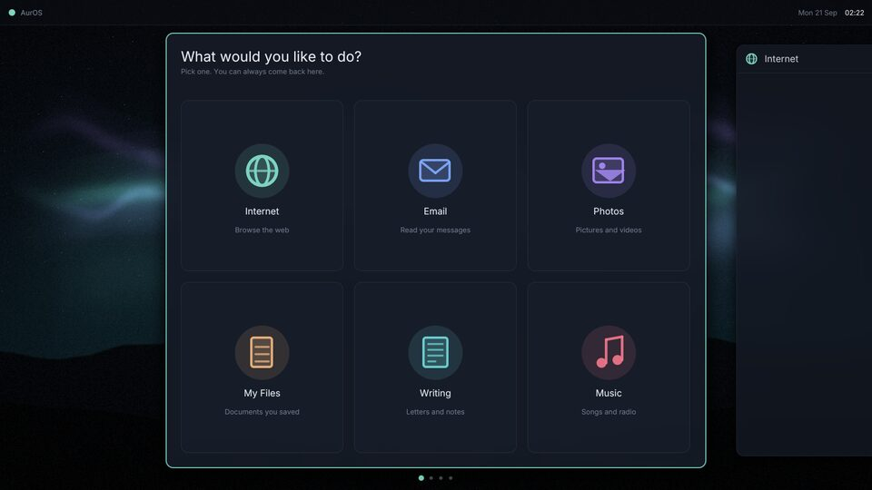
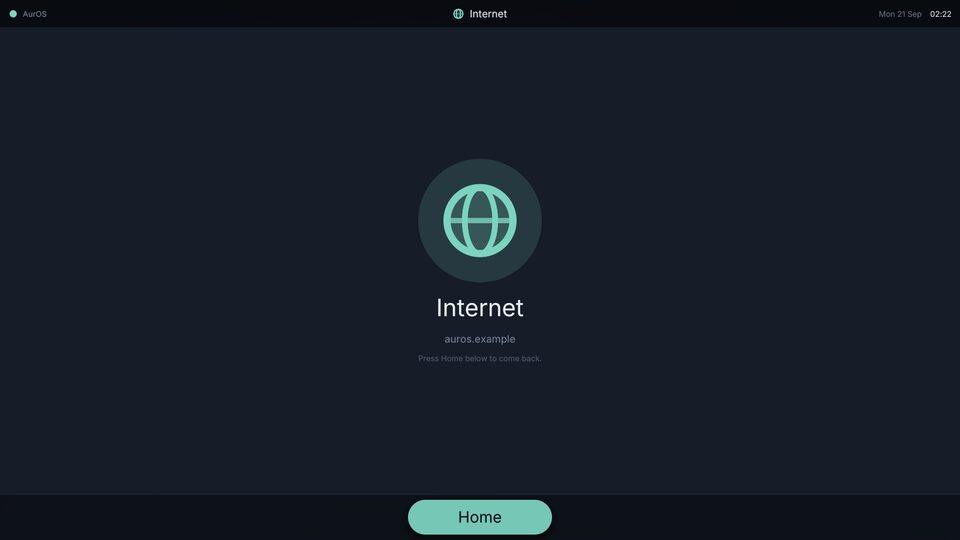

Make your older computer feel new again.
AurOS is a free, simple system for your Windows computer. Windows and all your files stay, and you can go back whenever you like.
Free. For Windows 10 and 11. About 10 minutes with fast internet.
AurOS needs Windows 10 or 11, and this computer may have an older Windows. The installer checks first and will tell you.
Open this page on the Windows computer you want to change.
AurOS can’t go on this computer.
You’re on a phone or tablet, and AurOS goes on a Windows computer. Send yourself the link:
This is a Mac, and AurOS goes on a Windows computer. Send yourself the link:
This is a Chromebook, and AurOS goes on a Windows computer. Send yourself the link:
This computer isn’t running Windows, and AurOS goes on a Windows computer. Send yourself the link:
It has a different kind of chip inside (called ARM, as in Snapdragon laptops), and AurOS only works on the usual kind. Have another Windows computer? Send yourself the link:
It has the older, 32-bit kind of Windows, and AurOS needs the 64-bit kind. Have another Windows computer? Send yourself the link:
Or write down the address: @AUROS_ADDRESS@
Do this on the Windows computer you want to change. See every step first

What you’ll see, step by step
Three steps. The pictures show exactly what to press: look for the yellow numbers.
-
Step 1: The download
Press Get AurOS. Your computer saves a file called AurOS-Setup.exe.
Your browser will probably warn you that the file “isn’t commonly downloaded”. That’s normal. Browsers say this about every program they haven’t seen many times, and free programs like AurOS are rarely seen. This is how to keep it:
In Microsoft Edge
- Press … (three dots) next to the file, then Keep.
- Press Show more, then Keep anyway.
DownloadsAurOS-Setup.exe isn’t commonly downloaded. Make sure you trust AurOS-Setup.exe before you open it.1Make sure you trust AurOS-Setup.exe before you open it
Microsoft Defender SmartScreen couldn’t verify if this file is safe because it isn’t commonly downloaded.
Publisher: Unknown
Delete 3Show more ⌄In Google Chrome
- Press the file where it says Suspicious download blocked.
- Press Download suspicious file.
Recent downloadsAurOS-Setup.exe
Suspicious download blocked 1This file isn’t commonly downloaded and it may be dangerous.
Delete 2Download suspicious fileIn Firefox
If it says the file is not commonly downloaded: open the list of downloads (the arrow at the top right), press the file, then press Allow download.
When it has finished, open it: press Open file under its name, or find AurOS-Setup.exe in your Downloads folder and double-click it.
-
Step 2: Windows asks if it’s all right
Windows will probably show a blue box: “Windows protected your PC”. That’s normal too. Windows says this about every program it hasn’t seen many times, and it is usual for free software. Press More info, then Run anyway.
Windows protected your PC
Microsoft Defender SmartScreen prevented an unrecognized app from starting. Running this app might put your PC at risk.
1More info
Don’t runWindows protected your PC
App: AurOS-Setup.exe
Publisher: Unknown publisher2Run anywayDon’t runThen Windows asks whether AurOS may make changes. Press Yes.
User Account Control
Do you want to allow this app from an unknown publisher to make changes to your device?
Do you want to allow this app to make changes to your device?
AurOS-Setup.exe
Publisher: UnknownAurOS Setup
Verified publisher: AurOS3YesNoOnly if Windows says “Smart App Control blocked an app that may be unsafe”
Some newer Windows 11 computers have a setting called Smart App Control. It blocks programs Windows hasn’t seen many times, and it has no Run anyway button. Nothing has been changed on your computer. Close the message, then switch that setting off:
Smart App Control blocked an app that may be unsafe
AurOS-Setup.exe
- Press Start, type Windows Security, and open it.
- Press App & browser control.
- Press Smart App Control settings.
- Choose Off. If Windows asks you to confirm, press Yes.
- Open AurOS-Setup.exe again from your Downloads folder, and carry on from More info above.
Windows Security
Virus & threat protection Firewall & network protection 2App & browser controlApp & browser control
3Smart App Control settings
Smart App Control
On
Evaluation
4Off
Good to know before you switch it off: on many computers, once Smart App Control is off, it can’t be switched back on without setting Windows up again from the start. Windows’ other protection, Microsoft Defender, keeps working either way.
-
Step 3: Pick a look, press Install AurOS
AurOS checks your computer first. Then you pick the look you like and press Install AurOS.
Pick the look you want

Like Windows
Like a Mac
Big and simple
One thing at a time1Install AurOSAurOS gets ready while you wait. Then the computer restarts once, by itself. Leave it switched on.
When AurOS starts, it asks whether everything works. Have a look around first if you like; it asks again next time. Until you press Yes, Windows and your files are kept just as they were. If AurOS ever fails to start, the computer starts Windows by itself, and No, go back to Windows brings Windows back.
Does everything work?
Have a look around. Nothing has been decided yet.
2Yes, it all worksLet me look firstNo, go back to Windows
Pick the look you want
You choose in the installer. You can change it later in Settings, under “How this computer works”.
-
Like Windows
A bar along the bottom, with a button for each thing you have open.
-
Like a Mac
Your favourite programs sit in a row at the bottom, always in the same place.
-
Big and simple
A home page of big buttons for the things you do most. Everything you open sits in a row at the edge, so nothing gets lost.
-
One thing at a time
Press a big button and that one thing fills the screen. One big Home button always brings you back.
More systems, like Ubuntu and Linux Mint, are coming.
Good to know
- How long it takes
- About 10 minutes on a newer computer with a solid-state drive and fast internet. An older computer with a spinning hard disk, or slow internet, takes longer.
- Which computers
- A Windows 10 or Windows 11 computer made after about 2013. Not Macs, Chromebooks, phones or tablets.
- Room it needs
- AurOS uses up to 40 GB of the empty space on your computer (less on a small drive), and always leaves Windows at least 20 GB free, more on a big drive. The installer checks this for you.
- Keep it plugged in
- Plug in the charger before you start, and leave it in until AurOS has started.
- If AurOS can’t go on your computer
- The installer checks your computer first. If something would stop AurOS working, it says so in plain words before it changes anything, and your computer stays exactly as it was.
Questions
Is it free?
Yes. No adverts, no subscription, nothing to pay later. AurOS is made in the open, so anyone can check how it works.
Will I lose my files?
No. AurOS goes into empty space on your computer, and your files stay in Windows, untouched. When AurOS first starts, it offers to bring copies of your documents and pictures across. As with any big change, photos you treasure are safest with a copy somewhere else too, such as a memory stick.
Can I go back to Windows?
Yes. Until you tell AurOS that everything works, Windows and your files are kept just as they were, and No, go back to Windows brings Windows back. If AurOS ever fails to start, the computer starts Windows by itself. Later, Put Windows back in AurOS’s Settings makes the computer start Windows again, as it was.
What about my programs, like Microsoft Office?
Programs made for Windows don’t run in AurOS. AurOS comes with its own for letters, email, photos and the internet, and Get more programs has many more, free. You can use Microsoft Office in the internet browser, at office.com. If you need a Windows program, you can always go back to Windows.
Is it safe?
AurOS checks your computer before it changes anything, keeps Windows and your files, and gets its security updates by itself every day. Windows and your browser warn you about it for the same reason they warn about most free programs: they haven’t seen it many times. The steps above show what to press.
AurOS goes on a Windows computer. Send yourself the link and open it there.